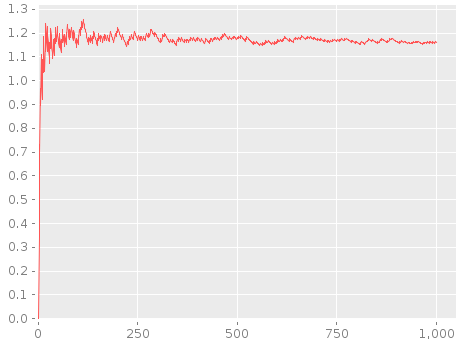
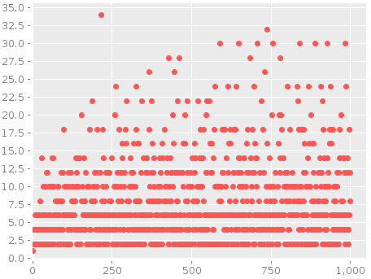

List
Vector
(Hash-) Map
Set
Create
(...)(list ...)
Read
(first seq)(nth seq n)
Transformation
(cons elem seq)(conj seq elem ...)(rest seq)
Create
[ ... ](vector ...)(vec seq)(into v seq)
Read: Vectors are functions.
(v n)(get v n)(nth v n),(first ...)still apply.
Transformation
conj,cons,reststill apply.(assoc v n val)(update v n func)(subvec v start end)(replace map v)
Create
{ ... }(hash-map ...)(array-map ...)
Read: maps are functions, and keywords are functions!!
(m key)(:keyword m)(get m key default-val)(keys m)(vals m)(contains? m key)
Transform
(assoc m key val)(assoc-in m [path] val)(dissoc m key)(merge m1 m2 ...)(merge-width f m1 m2 ...)(select-keys m [keys])(update m key func)(update-in m [path] func)(rename-keys m rename-map)
Seqs gets the most amount attention in Clojure.
(range <start> <end> <step>)
! Creates a sequence of integers.
(repeat <n> <x>)
(repeat <x>)
! Creates a sequence of the same value x repeately n times. If n
is omitted, the sequence continuous forever.
(iterate <f> <x>)
! A sequence with: x (f x), (f (f x)), … forever.
(repeatedly <n> <f>)
(repeatedly <f>)
! A sequence with: (f), (f), … $n$ times. If $n$ is omitted, the
sequence continuous forever.
(cycle <collection>)
! Generates an infinite sequence of by repeating the collection forever.
(clojure.java.io/reader <filename>)
(line-seq <rdr>)
Don’t forget to close the reader when you are done. To be safe, use the macro:
(with-open [rdr (clojure.java.io/reader <filename>)]
(let [lines (line-seq rdr)]
...))
! The with-open macro will create the symbol binding to the opened
reader, and close it afterwards.
#"..."
! Clojure relies on Java’s regular expression library. So the syntax
for regular expressions is the same as Java’s java.util.regex library. But
creating a pattern is really simple with the reader macro #"..."
(re-seq <pattern> <string>)
! Returns a sequence of matches of pattern in the string. If the pattern does not contain groups, then each match is a string. Otherwise, it’s a vector containing the groups.
(def nat (iterate inc 0))
! Defining natural numbers. This is an infinite sequence, so (println nat) will result in a
never-ending loop.
(def nat+ (rest nat))
; (1 2 3 4 5 ... ∞)
! Strictly positive numbers
(first nat) ; 0
(first nat+) ; 1
! Getting the first element
(take 10 nat)
; (0 1 2 3 4 5 6 7 8 9)
! Takes the first 100 natural numbers.
(interleave <seq1> <seq2>)
! Mix two sequences into one by interleaving the elements.
(interpose <x> <seq>)
! Insert <x> between the elements in <seq>.
(split-at <index> <seq>)
! Returns a vector containing two seqs. The two seqs are produced by
splitting the input <seq> at the <index>.
(map <fn> <seq>)
! Returns a sequence by applying (<fn> x) for each x in <seq>.
(map <fn> <seq-1> <seq-2>)
! Returns a sequence by applying (<fn> xi yi) for each xi in <seq-1> and yi in <seq-2>.
(filter <pred> <seq>)
! The function <pre> is a predicate, namely a function that always
returns true/false. The returned seq contains elements
x$\in$<seq> that satisfies the
predicate, i.e. (<pred> x) is true.
(reduce <f> <seq>)
(reduce <f> <x0> <seq>)
! Reduces a sequence (x1 x2 x3) to a single value of
(f (f (f x0) x1) x3).
(take-while <pred> <seq>)
! Takes elements x from <seq> for as long as (<pred> x) is true.
(drop-while <pred> <seq>)
! Drops elements x from <seq> for as long as (<pred> x) is true.
Returns the remaining elements.
(split-with <pred> <seq>)
! Returns a vector of two seqs. The first is (take-while ...) and the
second is (drop-while ...).
(every? <pred> <seq>)
! Tests if pred holds for every element of the seq.
(some <pred> <seq>)
! Returns the first element in seq that satisfies the predicate. It can be used to test if pred holds for some element of the seq.
(not-every? <pred> <seq>)
! Test that predicate is violated by some elements in seq.
(not-any? <pred> <seq>)
! Test that none of the elements in seq satisfies the predicate.
(sort <seq>)
(sort <cmp> <seq>)
! Sorts the seq by an optional comparator.
(sort-by <key-fn> <seq>)
(sort-by <key-fn> <cmp> <seq>)
! Sorts the seq by (<key-fn> x) instead of the elements x.
(reverse seq)
! Reverses the sequence.
(def nat (iterate inc 0))
(defn even? [n] (zero? (mod n 2)))
(def even-nat (filter even? nat))
(def odd-nat (filter #(not (even? %1)) nat))
(take 4 even-nat) ; (0 2 4 6)
(take 4 odd-nat) ; (1 3 5 7)
(interleave odd-nat even-nat)
; => (1 0 3 2 5 4 7 6)
(defn prime? [n] (not-any? (fn [i] (zero? (mod n i))) (range 2 n)))
(def primes (filter prime? (drop 2 nat)))
(take 100 primes)
Questions:
- Does the gap between two adjacent primes grow?
- How many primes $\leq n$ are there for growing n?
(def letters [\a \b \c])
(def numbers [ 1 2 3 4 5 6])
(map vector letters numbers)
; => ([\a 1] [\b 2] [\c 3])
(def prime-gaps
(map #(apply - (reverse %)) (map vector primes (rest primes))))
(defn count-primes [n] (count (take-while #(<= % n) primes)))
(def prime-counts (map count-primes nat))
Theorem:
The distribution of primes is $\Theta(n/\log n)$.
(defn g [n] (if (> n 1) (/ (float n) (Math/log n)) 1))
(def alpha (map #(/ %1 (g %2)) prime-counts nat))
You need to include incanter.jar in the CLASSPATH to run the following code.
(use '(incanter core charts))
(let [ds (conj-cols (take 1000 nat) (take 1000 alpha))]
(view (xy-plot 0 1 :data ds)))

(view
(scatter-plot 0 1
:data (conj-cols
(take 1000 nat)
(take 1000 prime-gaps))))

(use '(incanter core charts))
(let [; list of natural numbers
nat (iterate inc 0)
; a predicate to decide of input is prime
prime? (fn [n]
(not-any?
(fn [i] (zero? (mod n i)))
(range 2 n)))
; list of primes
primes (filter prime? nat)
; compute the gaps between to adjacent primes
gaps (map
#(apply - (reverse %))
(map vector primes (rest primes)))
; counts the number of primes less than n
countp (fn [n] (count (take-while #(< % n) primes)))]
; plots
(view (scatter-plot 0 1 :data (conj-cols (take 1000 nat) (take 1000 gaps))))
(view (xy-plot 0 1 :data (conj-cols (take 1000 nat)
(map #(* (Math/log %) (/ (countp %) (float %)))
(take 1000 nat))))))